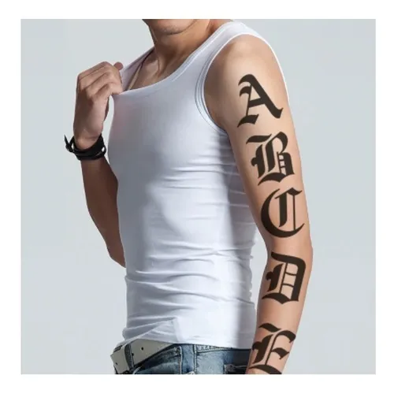
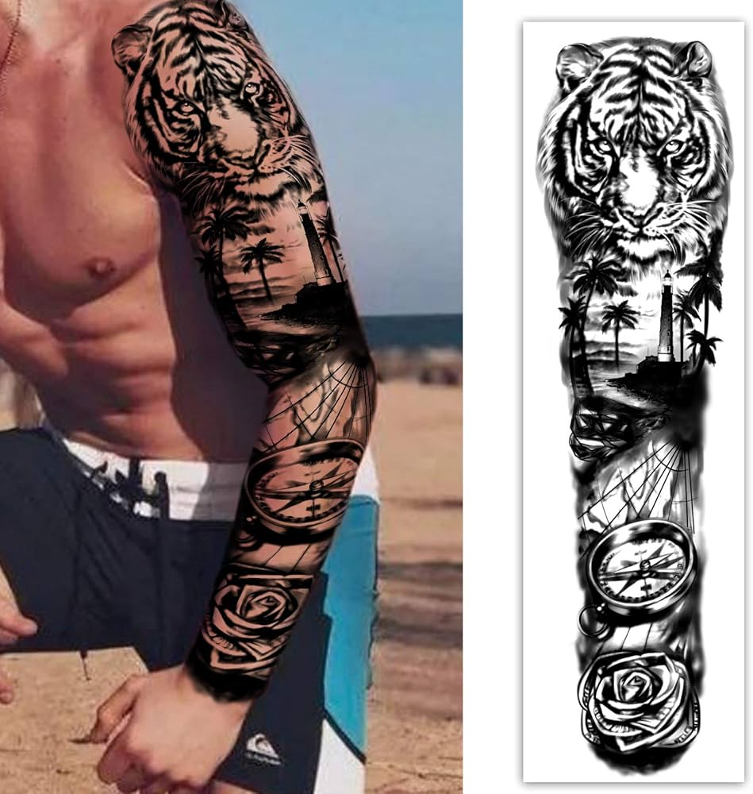
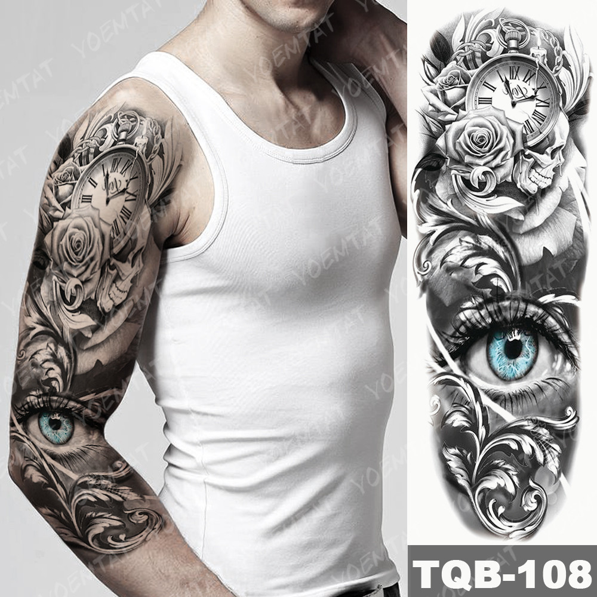

Nosso Portfólio



Cuidados Pós-Tatuagem
- Lave com sabão neutro e água fria, duas vezes por dia.
- Não coce nem arranque as casquinhas — isso pode danificar o desenho.
- Use pomada cicatrizante recomendada pelo tatuador.
- Evite sol, mar e piscina nas primeiras 2 semanas.
- Mantenha a tatuagem hidratada com cremes neutros.
Destaque do Mês

Arte por João Silva — Estilo realismo